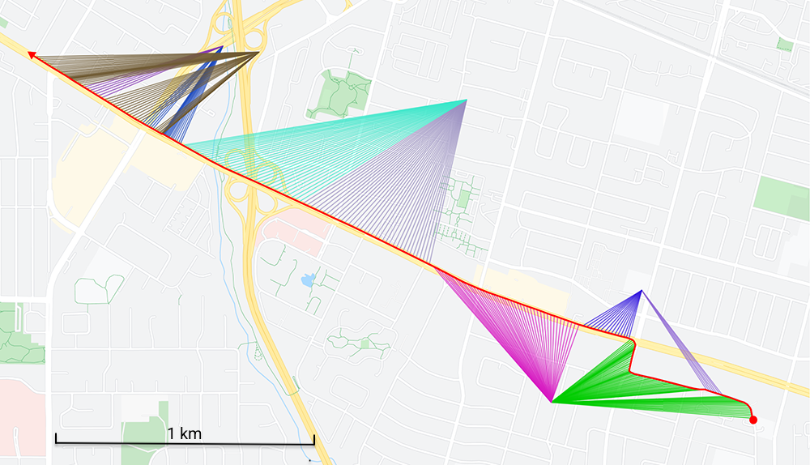
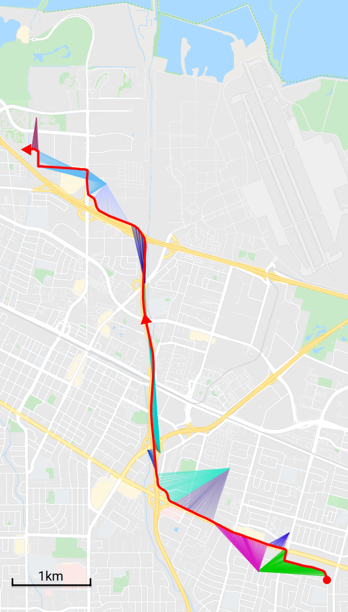
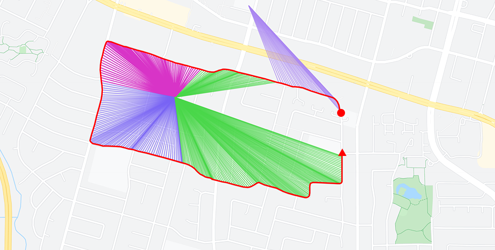

One of my favorite books is 2013 "High Performance Browser Networking" by Ilya Grigorik. Besides a wealth of actionable advice, the book is illustrated with captivating real life stories.
46% of Battery Consumption to Transfer 0.2% of Total Bytes
==========================================================
Whenever a Pandora user plays a song, the entire music file is streamed by the application from the network in one shot, which is the correct behavior: burst as much data as you can, then turn off the radio for as long as possible.
However, following the music transfer, the application would conduct periodic audience measurements by sending intermittent analytics pings every 60 seconds. The net effect? The analytics beacons accounted for 0.2% of the total transferred bytes and 46% of the total power consumption of the application!
- Ilya Grigorik, High Performance Browser Networking
Ilya takes the time to go deep to make his points across. To enlighten readers on the topic of cellphone battery life, he dedicates a whole chapter to detail the GSM, UMTS, and LTE radio modem. It is fascinating to realize that problems at one level can find their roots several layers below.
By exploring the whole stack, High Performance Browser Networking does more than providing facts. It advocates a philosophy.
Good developers know how things work.
Great developers know why things work.
- Steve Souders, High Performance Browser Networking Forewords
Back when I read it, in 2013, I thought it would have been cool to do my own exploration and visualize how the radio jumped from one cell to another while the phone traveled.
The idea was not doable with my 2013 iOS phone since it did not expose the data I needed but my current Pixel does not have this issue. LocationManager can provide a GPS location (lat,long) every second. Meanwhile, TelephonyManager gives the cellID=(mmc,mcc,lac,cid) the radio is currently camping on.
A cellID database[1], allows to know the (lat,long) of each CellID. What is left is to draw the itinerary (in red) and, for each second, a cellID-color-coded connection to the cell.

A drive from Sunnyvale to downtown Mountain View.
The result above shows a 7 minutes drive covering 2.3 miles (3.7 km) with an LTE capable phone (a.k.a UE for User Equipment). Along the way, five towers and nine cells (a.k.a eNB for Evolved NodeB) were encountered.

Combining the map, Google StreetView, and Wikipedia allowed to understand a lot of things.
- Several cellIDs map to the same eNB lat/long coordinates. That's because the antennas mounted on an eNB don't have 360° coverage. The angle and range of each antenna carves the space into pizza slice shaped cells.
- Antennas are positioned and oriented strategically. In the map on the right, towers are posted along highway 85 and antennas pointed parallel to it. Some antennas seem to have exceptionally narrow and long range. Possibly to accommodate the high density during traffic jams.
- eNBs have a much higher density than I thought. Googling about "cellphone tower range" returned a 45 miles figure. That may be true in rural areas but in a city, population density and eNB density are correlated. That means there were towers every mile in Sunnyvale.
- Sites are not necessarily shared among operators. The accuracy of the CellID database (CellMapper) is so high that I was able to go on Google StreetView and see the actual towers. I expected to see huge monoliths with large arrays of antenna for each operators but most of the time it looked like a single one was there.
- eNB antennas can be found on many things besides masts[2]. Some of the locations include churches[3], electric pylons[4], and even commercial buildings.
- Once you are in the habit of looking for them, these once invisible cell towers become impossible to ignore.
- The UE's LTE radio is able to jump from cells back and forth. Several times within a minute seems to be a common occurrence within a city to palliate to building obstruction.
- Tower pairing (a.k.a camping) looks deterministic. In the two previous maps, the tower usage looks similar in the shared portion of the trip. The selection happens according to a state-machine configured by each cell via broadcast SIB messages. The state transition happens based on multiple factors such a previous cell signal strength threshold or next cell signal strength threshold.
- On a "long" (10 miles) driving session I saw that the LAC (Location Area Code) part of the CellID remained the same. According to the LTE specs, cell-towers don't have to perform UE hand-overs when a phone remains in the LAC. The phone starts camping on the next tower while remaining in RCC_IDLE mode without emitting data. Not only does this save battery, it also means operators don't really know where the phone is as long as it remains in the same LAC (although the accuracy of cell-based geolocation has been disputed ever since GSM[5]).
- Each tower seems to use three 120° antennas. It is pretty obvious when circling around one.

Traveling around a tower reveals the 120° radius of each cells.
Drawing maps was fun. It made me want to learn more about the field. I found it to not only be deep but also quite broad. Even drawing a minimal table to summarize it required a substantial amount of acronym research.
| Generation | Technology | Marketing | Notes |
|---|---|---|---|
| 0G | Car Phones | Phillip Drummond's phone | |
| 1G | DynaTAC | Gordon Gekko's phone | |
| 2G | GSM | GSM | Nokia 3310 (The Brick). SMS capable |
| GPRS | Voice OR data (no simultaneous) | ||
| EDGE | iPhone 1 | ||
| cdmaOne | CDMA | ||
| 3G | UMTS | HSPA | iPhone 3GS. Simultaneous voice and data |
| HSPA+ | |||
| CDMA2000 | C2K | ||
| 4G | LTE | LTE | iPhone 5 / Pixel 1 |
| LTE Advanced | LTE+ | ||
| LTE Advanced Pro | LTE Pro | ||
| 5G | 5G | 5G | iPhone 12 / Pixel 4a 5g |
| 5G mmWave | 5G mmWave | iPhone 12 Pro Max /Pixel 5G | |
Starting in 1998 with 2G (GSM), all tech-stacks were standardized and documented by 3GPP. These specs span over hundreds of documents. Understanding them seems like a lifetime achievement.
There are no open source LTE stack to learn from[6] and even if there was, emitting on cellphone bands is highly regulated in order to make sure frequencies are not polluted with buggy modems.
The few books in the fields are very expensive. My "genuine window of interest" was fueled by these three.
Finally, there are apps that allow to peek under the hood to show the modem state and messages. I elected not to use them since not only they are expensive, they also require to root the phone.
After the publication of this article, I was contacted by developer Neil Mix who developed the Pandora app on iOS. He shared some interesting insight and reminded us that there are often two sides to a story.
I was the developer of Pandora's iPhone app during the time that the behavior Ilya Grigorik describes was implemented.
I was well aware of the negative battery impact caused by the analytics pings. Those pings were required by the business to support metrics for advertisers to gauge Pandora's usage and reach, which in-turn underpinned the advertising revenue that supported the company. Without those pings, it's possible the company would have been unable to stay financially solvent!
I would have much preferred that the analytics be delivered in batch at the same time we loaded audio, thereby minimizing antenna usage. But, the nature of the analytics required we use a 3rd-party partner to collect and verify. We collaborated with the 3rd-party on a project to implement a batch protocol, but for reasons that were never quite clear to me they were unable or unwilling to complete the project during my tenure at the company. I remember being quite frustrated by it.
I find it fascinating how the promise of technology is so often inhibited by the circumstances of real-world issues that have nothing at all to do with technology.
- Neil Mix
| ^ | [1] | Wikipedia list of CellID databases |
| ^ | [2] | Cell tower on a mast |
| ^ | [3] | Cell tower on a church |
| ^ | [4] | Cell tower on an electric pylon |
| ^ | [5] | Cell tower junk science |
| ^ | [6] | ...at least none that will work on iOS or Android. There are however projects such as Osmocom and srsRAN. |
{kind=link}
{kind=link}
{kind=link}
{kind=link}
{kind=link}
{kind=link}